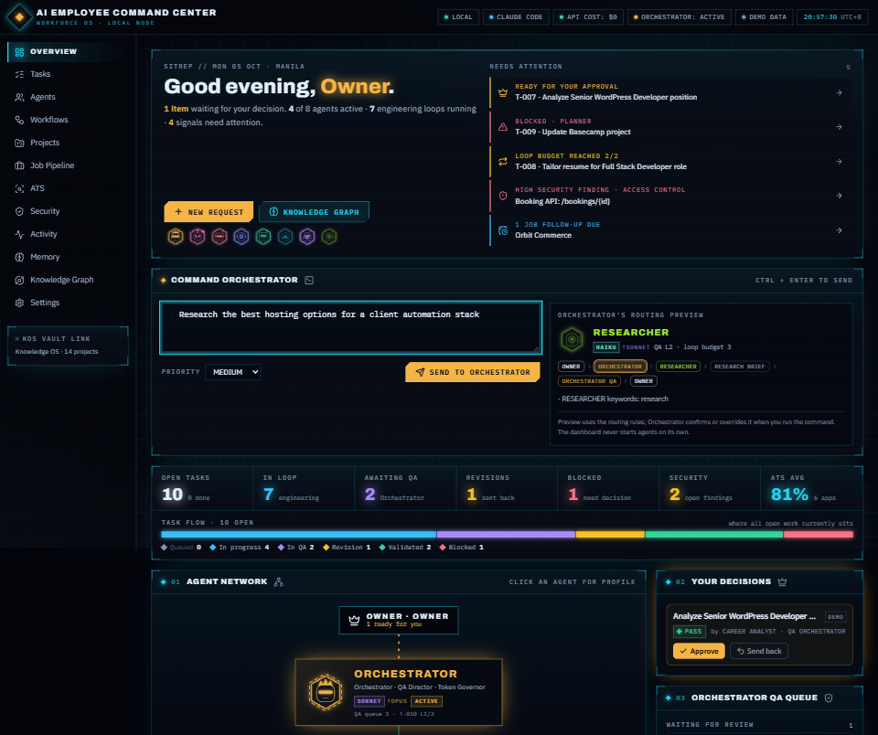
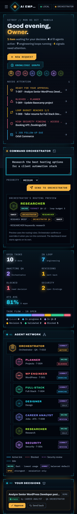

AI Employee Command Center
Built a local-first AI workforce: ten Claude Code agents (orchestrator, planner, WordPress, full-stack, design, career, research, security, video and finance) where the orchestrator triages each request, routes it to the right specialist and runs QA before anything reaches me. A sci-fi command dashboard shows the agents, engineering loops, QA queue and security reviews, plus a live 3D map of my Obsidian knowledge vault. Designed and built with AI pair-programming; runs on a Claude subscription with $0 API cost.
TECH STACK — DETAILED
AGENT ORCHESTRATION
10 Claude Code subagents
15 on-demand skills
QA gates, loop budgets and owner approval enforced in code
DASHBOARD
React 19 + TypeScript + Vite
Tailwind CSS v4 HUD design system
3D knowledge graph (Three.js)
MEMORY & TOKENS
Obsidian vault as long-term memory
Progressive context loading
Budgeted, cache-first research agent
SECURITY & QUALITY
Local-only API with CSRF/origin checks
Encrypted OAuth tokens (read-only Basecamp sync)
42 automated tests
PRIVATE SYSTEM — DEMO ON REQUEST